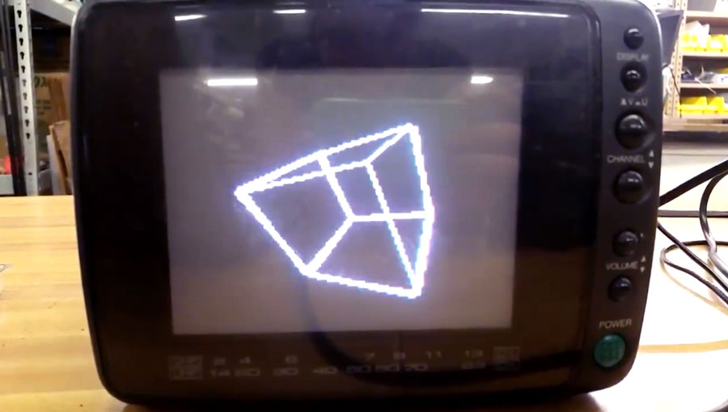
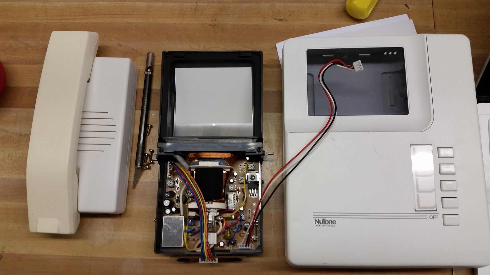

Your Pet Eye started with a simple idea: What if a video game was really bad?
Well, no, that's not entirely accurate. It started when I got an Adafruit Hallowing in my swag bag at the 2018 Hackaday Superconference. If you're not familiar with the Hallowing, it's a little skull-shaped dev board with a small LCD screen that, when loaded with the stock software, displays an eye that looks around and blinks. We'll come back to that bad video game idea later.
I thought the Hallowing was a neat concept but I was disappointed that there is no way to control where the eye looks. It just looks where it looks.
Around that same time, I was learning about TVout, an Arduino library that, with the help of an extremely simple digital-to-analog converter consisting of two resistors, outputs a composite video signal good enough to be displayed on most displays with composite input. Since it's running on an Arduino, it's a crude signal, only capable of showing black or white, and not even shades of gray. It does work though, and I think that's really neat. It really makes the most of the Arduino and can display basic text, rectangles, circles, lines, and even bitmaps.
There was just one problem though. I didn't know enough about coding to figure out how to make the Arduino do what I wanted, which was making the eye look around in response to the user moving a joystick. Now, if I could have been satisfied with drawing a simple eye using TVout's circle and line functions, this would have been fairly easy. You just give the shapes coordinates and have some code change those coordinates in a way that's mapped to joystick position.
But I'm too picky for that. I wanted the eye to have a certain kind of blocky look inspired by something I saw on Instagram. Displaying that as a static image was simple enough, but making it move was complicated. If I wanted the eye to have five horizontal positions and five vertical positions, that meant I would need to store 25(5x5) bitmaps, which is a lot, and that was before I thought up other features I wanted to include, like blinking and a pupil that constricts or dilates in response to ambient light. If I gave the eye a modest four frames for a blink, that would multiply the number of bitmaps to 100 (25x4). If I gave the pupil four dilation levels, that would further multiple the number of required bitmaps to 400 (100x4). Assuming that all of the Arduino's 32K of flash memory is available for storing a sketch (it's not), that would mean each bitmap could only be 80 bytes, and that's not even accounting for the memory that would be taken up by the rest of the sketch and the TVout library. Basically, it was impossible to do it this way.
There is a way though: bit blitting, which is short for bit block transfer. I had never heard of this before, but my friend Roger Cheng, who has a very nice website that documents his own projects, was familiar with it, and it's what he suggested.
To understand bit blitting, think about how cartoons are made. If you want to have an animation of a car driving along a road, you could draw the entire scene, background, road and car, over and over again, drawing the car in a new position each time. But that would be stupid and a lot of work. To make things easier for yourself, you could instead draw the car on a clear sheet of plastic, and the background and road on an opaque piece. If you lay the car on top of the background, you can animate the car by repositioning its piece of plastic so the car "moves" down the road. Bit blitting is like this. You make the bitmap you want by combining smaller bitmap pieces together with code.
Now, let's think about the eye. If we want it to look left or right, we don't have to move all parts of the eye. We just need to move the iris and the pupil. So, we can make the white of the eye one bitmap and the iris and the pupil another bitmap. With code we can specify where the iris and pupil get laid on top of the white of the eye when they are combined. To make the eye look left, we just position the iris and pupil to the left and combine them with the white. Now we can make the eye look anywhere we want with just two bitmaps instead of 25. We can use the same basic process to position eyelids so that the eye blinks. What would have required 400 bitmaps can now be done with maybe 10 bitmaps that we simply pick and choose and move around. (In this case, what we actually did was create a bitmap for a white "pixel" and a black "pixel" and drew those in multiple places to create the white of the eye.)
Now, if you want to make the eye blink, you could create a bitmap for the upper eyelid and lower eyelid and you could combine them in a few positions with the eye to create an animated blink
There were some other coding tricks Roger helped me with, (he wrote most of the code and supervised me writing the rest tbh) like putting things into program memory, and finding ways to optimize it so it ran fast enough to feel like an actual animation. The rest of the hard work was all in building the hardware.
For a joystick, I used one I salvaged from an RC airplane controller. Those kinds of joysticks are basically just a lot of mechanical bits attached to two potentiometers. The potentiometers are used as voltage dividers, so when you move the stick, the voltage level on their center pin changes. If you connect those center pins to two analog input pins of the Arduino, you can electronically track the motion of the stick in the X and Y directions. Map that movement to the position of the iris and pupil in code and you have an eye that you can point in any direction using a joystick
Making the pupil responive to light was similar. I created another voltage divider with one resistor being a photoresistor so as the light shining on it varies, so does the voltage it outputs into a third analog input pin on the Arduino. Blinking was achieved by wiring a simple pushbutton to the Arduino and writing some code to make the eye blink when the button is pushed.
For a screen, I used one of those funky 90-degree CRTs that Sony used in their Watchman line. I actually tried to hack a Watchman itself to take composite input, but I messed something up and killed its video circuit. It still plays audio, but it has no picture. Bummer...
After feeling bad about ruining a perfectly good Watchman and wasting $30 in the process, I went looking around on eBay again and I found a an old video intercom system that uses the same kind of CRT. It turned out that the CRT and its supporting circuitry were actually manufactured by Sony, and helpfully, they were designed to take composite video input.
That meant I didn't have to do any of the kind of tricky hacking that ruined my Watchman. (This kind of video intercom was also used by bitluni in his (CRT Game Boy project). I had all the pieces I needed now, so it was time to make some aesthetic and design decisions.
A the top of this page, I mentioned that my concept for this project was that it should be like a really bad video game. There was a time—it seems like—in the history of the video-game industry where everyone was trying to publish video games, whether they had the experience and skills or not. There was also a push to create educational video games that could be used in schools. The result was some really awful video games you were supposed to play while you were in the classroom. That's what I wanted this project to be: A supposedly educational video game that teaches you about the eye while sucking terribly.
I decided to place this video game at a point in (alternate) history when classrooms might have had one or two Apple II computers, and I wanted the screen to look like it was a green phosphor monitor. Since the CRT from the intercom was black and white, I had to find a way to make it look green. For that I used stained-glass spray paint. If you're not familiar with it, stained glass spray paint is a special kind of spray paint that has color but goes on clear. Crafters use it for coloring plain clear glass. I had previously used it on the Lissajukebox project, and I used it again here.
For the project's enclosure, I used a metal box that once housed a motor-speed controller, and I looked to the original Pong arcade machines as aesthetic inspiration. I had seen a photo of one on Wikipedia and its faux walnut wood grain sides and bright yellow face appealed to me. I simply reversed the color scheme and used actual walnut wood instead of faux wood laminate.
Fitting all the parts inside the enclosure proved to be a challenge and my plan to also fit a rechargeable battery inside had to be scrapped, so power is supplied through a barrel jack. I also cheated a little and 3D printed a box that rides piggyback for holding the power switch and the jack. I really don't like how 3D prints look for finished projects in most cases, so I had to come up with a plan for making the little box match the larger metal enclosure. The process I came up with ended up looking pretty nice, and being rather involved, so I put together a little addendum video showing how that works.
Since this was supposed to be a a fictional video game, I created a series of title cards for fictional publishers involved in the development of the game that load when the game is first turned on. There are also basic instructions for how to "play" the game, and a splash screen with a Your Pet Ete logo. For the fun of it, I also created a fake TV commercial for the game like it was a real product. These days there are a lot of faux-VHS filters you can apply to videos, but they all overdo it, so to make the commercial look like it was aired on TV and recorded onto a VHS, I actually recorded it onto a VHS tape using a Raspberry Pi with composite video output, and then played it back from the tape into a video capture device plugging into my computer. It looks convincingly like a VHS recording because it is a VHS recording, lol.
After finished the project, I decided I didn't care for one aspect of its behavior. As originally written, the code makes the eye get sleepy and go to sleep after its been on 90 seconds. It was a cute cheat for creating a video game with no real end, but I didn't like that you can't wake the eye back up again. You have to just turn it off and turn it back on. Since then, I've rewritten the code so you can re-awaken the eye by moving the joystick or pressing the blink button. However, I have no easy access to the Arduino inside the enclosure, and disassembling the enclosure to gain access is a pain in the butt, so the modified code is still sitting on my computer. Maybe one day I'll get around to it.
Anyhow, big thank you to Roger for all his help with this project. It wouldn't have happened without him.